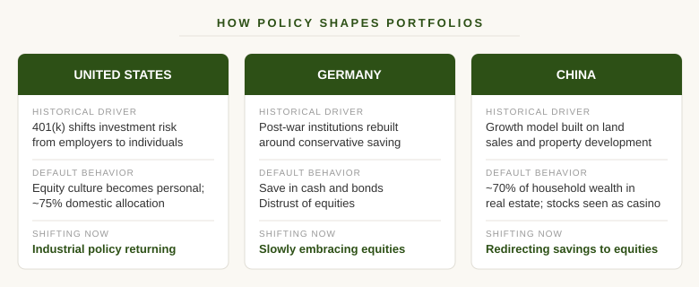
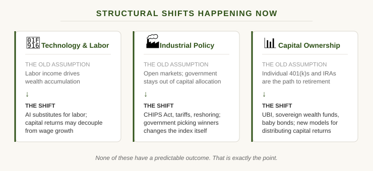

If you ask a German retiree where their money is, the answer is usually a savings account. If you ask an American the same question, it is probably a 401(k) full of equity mutual funds. Ask someone in China five years ago and the answer was real estate. Today it is increasingly the stock market.
None of these people are wrong. They are all responding rationally to the systems they were raised in. But here is the thing that should make you uncomfortable: the systems change. And when they do, the investment approach that felt like common sense can quietly become the wrong answer.

Policy Shapes How People Invest
We like to think our investment decisions are personal. Rational. Based on our own analysis and risk tolerance. But the biggest factor in how most people invest is not a spreadsheet. It is the economic and policy environment they grew up in.
Germany's savings culture did not come from nowhere. Hyperinflation in the 1920s destroyed an entire generation's savings. Then the 1948 currency reform wiped them out again. The lesson Germans internalized was not about any particular asset class. It was a deep, visceral distrust of financial instability itself. What came next is the important part: post-war West Germany rebuilt its institutions around making conservative saving feel safe again. The Bundesbank managed the Deutsche Mark with near-obsessive inflation discipline. Savings accounts came with government-backed deposit insurance. A robust social safety net (pensions, healthcare, unemployment insurance) reduced the need to chase higher returns in the first place. Germans did not default to cash and bonds despite their inflation trauma. They defaulted to cash and bonds because the entire post-war system was redesigned to make those instruments trustworthy, and because the social contract meant you did not need to take equity risk just to retire with dignity.
In the United States, the story is equities. But that was not always the case. For most of the 20th century, retirement in America meant a pension. You worked for a company for 30 years, and the company paid you a monthly check until you died. You never made an investment decision. The company bore all the risk.
That model started to crack in the 1970s and 1980s. Pensions were expensive. Companies faced growing liabilities as people lived longer. The regulatory burden of managing a defined benefit plan kept increasing. Then in 1978, Congress added a small provision to the tax code, Section 401(k), that allowed employees to defer a portion of their salary into a tax-advantaged account. It was not designed to replace pensions. It was a minor technical adjustment aimed at executive compensation plans.
But employers saw the opportunity immediately. A 401(k) shifted the entire burden of retirement saving and investment risk from the company to the individual worker. Through the 1980s and 1990s, companies froze or terminated their pension plans and replaced them with 401(k) programs. By 2000, the transition was essentially complete for most of the private sector.
Here is the part that surprises most people: pensions themselves were not always heavy in equities. Until the 1960s, most pension funds were invested almost entirely in bonds and Treasuries. When the 10-year Treasury was yielding 10 to 15 percent in the early 1980s, pensions could meet their return targets without taking much equity risk at all. But then interest rates began their four-decade decline. As bond yields fell, a gap opened between what fixed income could deliver and the 7 to 8 percent returns pensions needed to stay funded. The Federal Reserve has documented what happened next: pension funds reached for yield, steadily increasing their equity allocations to make up the difference. By the 2000s, many were running 60 to 70 percent in stocks. Declining interest rates did not just create a bond bull market. They pushed an entire institutional system into equities.
So when the 401(k) handed investment decisions to individual workers, those workers stepped into a world that was already oriented around equity ownership. The money was in stocks either way. What changed was who bore the risk and who had to think about it. Under a pension, a professional investment team managed the equity exposure. The worker never saw a balance, never chose a fund, never watched their retirement savings drop 40 percent during a downturn. The stock market exposure existed, but it was invisible.
The 401(k) made it visible and personal. Now it was your account, your balance, your decisions. You saw it climb through the late 1990s and felt like a genius. You saw it crater in 2008 and panicked. The behavioral relationship between ordinary Americans and the equity market changed completely, even though the aggregate allocation had not changed all that much. The 401(k) did not just move money into stocks. It moved the experience of equity investing from institutional professionals to tens of millions of individuals who never asked to become investors in the first place.
The downstream effects on culture were enormous. The mutual fund industry exploded to meet demand from millions of new retail investors. Financial literacy became synonymous with stock market literacy. Target-date funds were invented to simplify choices for people who had no framework for making them. An entire generation internalized the idea that long-term investing means owning U.S. equities, because the system was literally built to channel their attention, their anxiety, and their money in that direction. The 401(k) did not just change retirement policy. It changed the investment culture of an entire country.
China's story is more recent and arguably more dramatic. For decades, the Chinese government's growth model was built on infrastructure and real estate development. Local governments funded themselves by selling land use rights to developers. Banks were directed to lend aggressively to the property sector. The stock market, meanwhile, was young, volatile, and widely seen as closer to a casino than a wealth-building tool. There was no 401(k) equivalent pushing households toward equities. The incentives all pointed one direction: buy property.
And for a long time, that worked. Urban housing prices rose almost continuously for two decades. Real estate became the primary savings vehicle for the Chinese middle class, estimated at roughly 70% of household wealth at its peak. Families bought second and third apartments not because they needed the space but because property was the only reliable store of value available to them. The government had effectively created a system where the rational, obvious thing to do was pour your savings into real estate.
Then the model broke. Developers like Evergrande took on unsustainable debt. The government, concerned about speculative excess and systemic risk, tightened lending rules and imposed the "three red lines" policy in 2020 to cap developer leverage. Property sales collapsed. Prices in many cities fell. The asset that tens of millions of families had treated as a guaranteed savings account was suddenly losing value.
Beijing's response has been to try to redirect household savings into the stock market. Regulatory reforms to make equities more attractive, state media campaigns encouraging retail participation, new investment vehicles designed to channel money into domestic companies. The government is attempting to do in a few years what the United States did over several decades with the 401(k): shift an entire country's default investment behavior from one asset class to another. Whether it works is an open question. But the mechanism is the same one we see in every example. The government changes the structural incentives, and millions of people change how they invest. Not because they suddenly got smarter, but because the system around them changed.
The Uncomfortable Pattern
Here is what these examples have in common: in every case, the prevailing investment approach felt permanent to the people living through it. German savers were not sitting around worrying that their conservative approach might become suboptimal. American equity investors are not losing sleep over the possibility that the 401(k) era could look different in 30 years. Chinese property investors in 2015 were not planning for a government-directed pivot to equities.
But these shifts happen. Sometimes slowly, sometimes fast. Either way, most people do not notice until they are already on the wrong side of the change.
And they are not limited to other countries. The United States has had its own version of this. If you retired in 2000 with a portfolio heavily concentrated in U.S. equities, you spent the next decade watching international and emerging market stocks dramatically outperform. The S&P 500 lost money over that entire decade while international and emerging markets ran. Most U.S. investors were caught off guard, because home bias had been rewarded for so long that it stopped feeling like a bias and started feeling like a strategy.
What Is Changing Now
I am not going to predict what comes next. That is not what this blog is about. But I can point out the structural shifts happening right now that have the potential to change how investing works in the United States and elsewhere.
Technology and labor. AI is not a future scenario. It is already reshaping entire job categories. When technology can substitute for labor on a large enough scale, the relationship between wages, productivity, and capital returns starts to shift. That does not mean the stock market goes up or down. It means the assumptions underlying how most people build wealth through labor income and disciplined saving may need to be reexamined.
Industrial policy is back. The CHIPS Act, tariffs, reshoring incentives, energy subsidies. Whether you agree with these policies or not, they represent a fundamental shift in the government's role in directing capital. For decades, the American investment playbook assumed relatively open markets and limited industrial policy. That is changing. When governments start picking winners, it alters the landscape for everyone, including passive investors who assumed the index would sort it out.
The conversation about capital ownership is shifting. Universal basic income, sovereign wealth funds, baby bonds, expanded public ownership models. These are no longer fringe ideas. When policymakers start discussing how to distribute the returns from capital more broadly, it signals that the current system of individual capital accumulation through retirement accounts and market participation may not be the only model going forward.
None of these changes have a predictable outcome. That is exactly the point.

The Case for Diversification (Without a Prediction)
Most of the diversification advice you hear is about asset classes. Own stocks and bonds. Maybe some real estate. Throw in international for good measure. That is fine as far as it goes, but it misses the deeper point.
Real diversification means acknowledging that the structural environment you are investing in can change. It means your portfolio should not be a bet on any single country's policy framework staying the same. It should not be a bet that equities will always be the best long-term vehicle, or that the U.S. will always outperform, or that the economic model you grew up with is the one you will retire in.
When I work with families who have serious, generational wealth, the conversation is never about finding the best fund or timing the market. It is about building a portfolio that can survive structural change. That means geographic diversification. It means owning things across different asset types, including things you directly control. It means being honest about how much of your investment approach is strategy and how much is just the water you have been swimming in your whole life.
The German saver was not wrong for 60 years. Then the environment shifted and suddenly that approach carried a real opportunity cost. The American equity investor has been right for a long time. That does not mean the structural tailwinds are permanent.
What to Do With This
I am not asking you to sell your index funds or panic about the future. I am asking you to zoom out.
Look at your portfolio and ask: how much of this reflects a genuine, thoughtful strategy, and how much of it reflects the system I happen to live in? If you are a U.S. investor with 85% domestic equity exposure, that is not a diversified portfolio. That is a bet on American exceptionalism continuing indefinitely. It might be a good bet. It has been a good bet. But it is still a bet.
True diversification is not about predicting what comes next. It is about building something that holds up even when you are wrong about what comes next. The families I work with do not have better crystal balls than anyone else. They just build portfolios that do not require one.
And here is the other side of that coin: diversification also means not taking more risk than you actually need. If your goals require a 5 percent annual return and you are running a portfolio built for 10, you are not being ambitious. You are being exposed. Every point of excess risk is a vulnerability you did not need to accept. I wrote more about this in Training for the Race You're Actually In, but the short version is simple: figure out what you need, build a portfolio that can deliver it, and do not let the system convince you to swing harder than your life requires.
That is the kind of thinking worth borrowing.